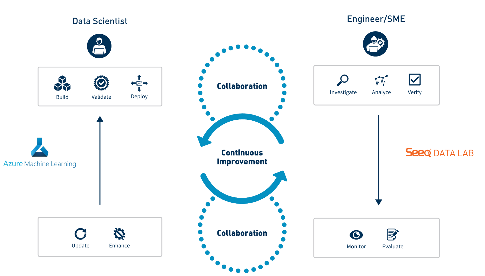

Introduction
seeq-azureml provides an example framework that allows a data scientist working in Azure ML Studio and a plant engineer or subject matter expert (SME) working in Seeq to collaborate and develop an effective, sustainable solution for high value problems in manufacturing.
This python module integrates with Microsoft Azure Machine Learning (AML) models as a web service and can be installed as a Seeq Add-on in Seeq Workbench. The plant engineer and/or SME interacts with the module through an easy to use UI from which they can accomplish critical activities such as ad hoc/historical evaluations, model deployment in real time, scaling to other assets, etc.
The Seeq Add-on is distributed as an example of a collaborative workflow between data scientists (model builders) and plant engineers/SMEs (model consumers). Users are encouraged to fork the repo and make the necessary modifications/enhancements that addresses the specific needs/workflows of their organization.
The seeq-azureml add-on is meant to be used for proof-of-concept models only. There are four significant caveats that users should be aware of when using this add-on:
- A new Azure app registration must be set up to provide the identity to Seeq via OIDC (Open ID Connect).
- The Azure app registration needs contributor access to the AzureML Studio workspace.
- A secret needs to be generated and configured in an ini file as per the instructions on the Seeq Add-on Installation section of the documentation.
- This add-on has very limited capability for scalability to multiple assets.
|  |
| Figure 1 - Collaborative Workflow between Data Scientists & Plant Engineers |